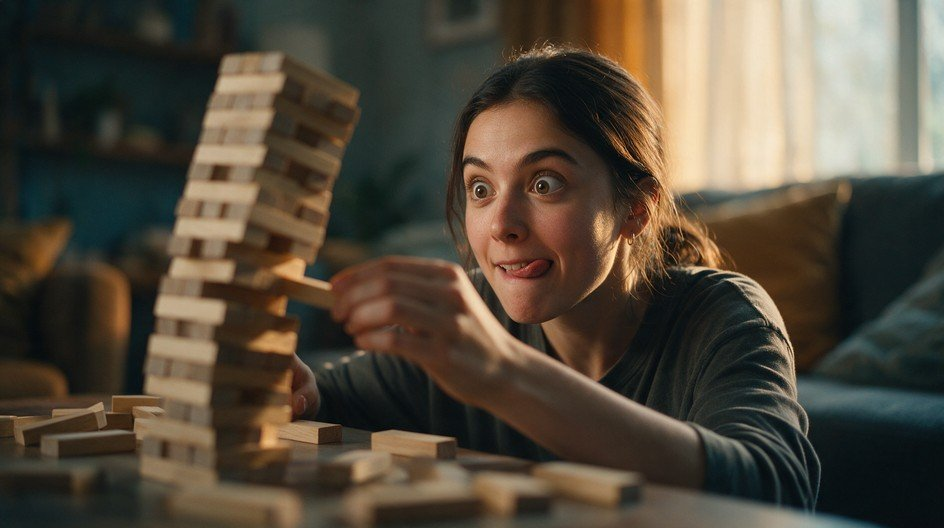

La tour grandit avec le groupe, personne ne veut la faire tomber

Co-construire un cadre de fonctionnement pour les deux jours, en douceur, sans rapport de force. Comportements recherchés : proposer, écouter, accepter de lâcher une idée si le groupe ne la retient pas, prendre soin collectivement de quelque chose de fragile. La mécanique qui produit ça : construction progressive et prise de risque partagée, la tour est le miroir du groupe.
"Cette tour va devenir le cadre de fonctionnement de nos deux jours ensemble. Chacun votre tour, vous allez retirer une brique n'importe où dans la tour, sans la faire tomber. En la retirant, vous proposez une règle de fonctionnement pour le groupe, une seule phrase. Le groupe en discute quelques secondes, on la garde ou pas. Dans tous les cas, la brique revient se poser en haut de la tour. La tour grandit avec nous."
La personne retire une brique, propose sa règle à voix haute. Je lance un tour de réactions très court (10-15 secondes maximum, un ou deux avis suffisent). Je tranche vite si ça traîne : "on la garde" ou "on la laisse de côté". Si retenue, je la note sur le paperboard. La brique est reposée en haut, quelle que soit la décision.
Je fais tourner dans l'ordre des places assises, ou je tire un prénom au hasard dans le tas de badges du Bingo qui vient de se terminer. Personne ne se porte volontaire, personne ne peut se dérober, ce qui évite que seuls les plus à l'aise proposent des règles.
Je propose deux ou trois exemples de la banque ci-dessous, sans jamais choisir à sa place, juste pour débloquer l'imagination. Je ne laisse jamais un silence gênant s'installer plus de 5-6 secondes.
Je ne dramatise jamais. Ma phrase prête à l'avance : "Elle tombe, on la reconstruit, et on continue." Je reconstruis en 30 secondes avec les règles déjà retenues, sans les redemander. C'est souvent un moment fort, presque toujours accueilli avec un rire collectif plutôt qu'une gêne, à condition que mon ton reste léger.
Je récapitule les règles retenues affichées sur le paperboard, je le laisse visible pour les deux jours. Puis, avant d'enchaîner sur la suite : "Ce que vous venez de faire a un nom, on y reviendra plus tard dans la journée." Rien de plus, juste planter la graine du jeu détourné sans développer, le grand dévoilement de midi s'en chargera.